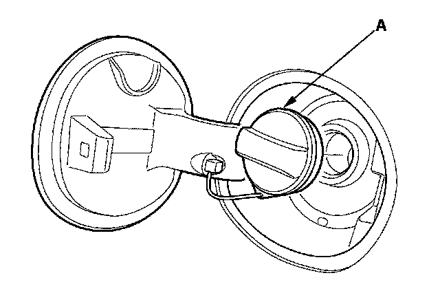
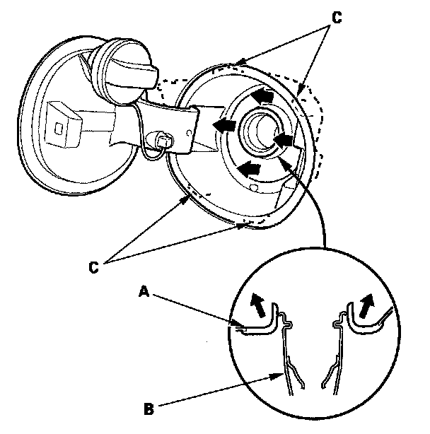
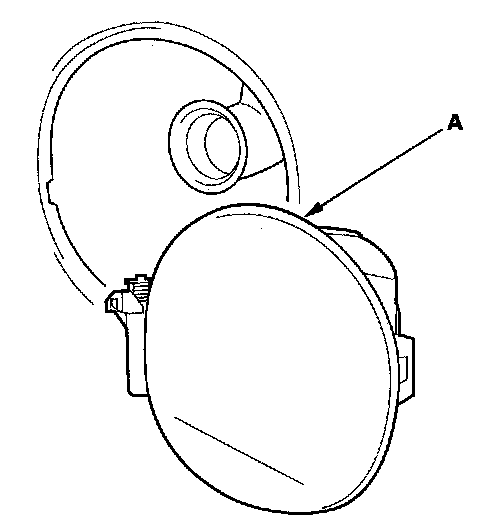
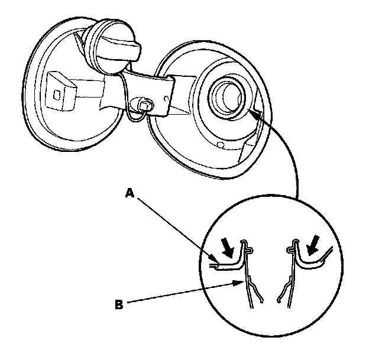

Fuel Fill Door/Adapter
Fuel Fill Door/Adapter ReplacementNOTE: Take care not to scratch the body.
1. Remove the fuel fill door latch.

2. Remove the fuel filler cap (A) by turning it counterclockwise.

3. From inside the wheelhouse, carefully push up the adapter lip (A) around the fuel filler pipe (B), and release the hooks (C) from the edge of the body hole by hand.

4. Remove the fuel fill door/adapter (A) from the body.

5. Install the fuel fill door/adapter in the reverse order of removal, and make sure the adapter lip (A) is fully seated on the fuel fill pipe (B).